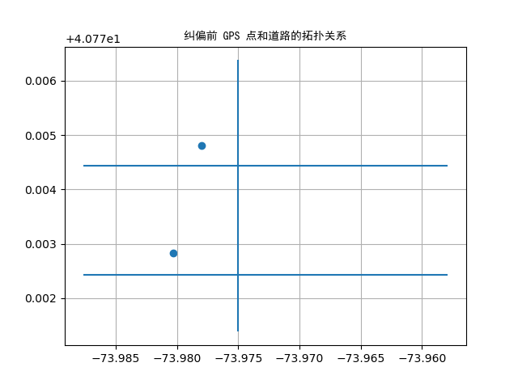

Map match¶
Arctern supports analysis of the relationship between GPS data and the road network, such as judging whether there is a road near the GPS point, searching for the road closest to the GPS point, and obtaining the closest mapping point on the road to the GPS point.
Generating dataset¶
First, we generate a data set to demonstrate how to use Arctern to analyze the relationship between GPS data and the road network.
roads: A collection of three LINESTRING objects created by the GeoSeries constructor to represent three roads.
points: A collection of two POINT objects created by the GeoSeries constructor to represent two GPS points.
>>> from arctern import GeoSeries
>>> roads = GeoSeries(["LINESTRING (-73.9750065 40.7713819,-73.9750065 40.7763781)", "LINESTRING (-73.9578864 40.7724317,-73.987674 40.7724317)", "LINESTRING (-73.9578864 40.7744317,-73.987674 40.7744317)"])
>>> points = GeoSeries(["POINT (-73.9780065 40.7748119)", "POINT (-73.9802864 40.7728317)"])
Find a road near a GPS point¶
The near_road method checks whether there is a road within a fixed range near the GPS point. Suppose points are the pick-up locations of taxis, and roads is the road network information of the corresponding city. Then, if some pick-up locations are not on the road or deviate too far from the road, then these positions can be regarded as noise.
Note: The coordinate reference system of the GPS points and road network must be "EPSG:4326".
>>> import arctern
>>>
>>> points
0 POINT (-73.9780065 40.7748119)
1 POINT (-73.9802864 40.7728317)
dtype: GeoDtype
>>>
>>> # Check whether there is any road within 40m of the GPS point.
>>> bool_rst = arctern.near_road(roads, points, 43)
>>> bool_rst
0 True
1 False
dtype: bool
>>>
>>> # Select a GPS point near the road.
>>> point_rst = points[bool_rst]
>>>
>>> # POINT (-73.962726 40.7601753) is filtered because there is no road nearby.
>>> point_rst
0 POINT (-73.9780065 40.7748119)
dtype: GeoDtype
Get the road closest to a GPS point¶
The nearest_road method gets the road closest to the GPS point. Its operation logic is as follows:
Create an index tree (Rtree) based on road network information.
Find all roads near a GPS point based on the index tree, and select the road closest to the GPS point.
Note: The coordinate reference system of the GPS points and road network must be "EPSG:4326".
>>> import arctern
>>>
>>> # Print road information.
>>> roads
0 LINESTRING (-73.9750065 40.7713819,-73.9750065 40.7763781)
1 LINESTRING (-73.9578864 40.7724317,-73.987674 40.7724317)
2 LINESTRING (-73.9578864 40.7744317,-73.987674 40.7744317)
dtype: GeoDtype
>>>
>>> # Find the road closest to the GPS point.
>>> roads_wkb_rst = arctern.nearest_road(roads, points)
>>>
>>> # Convert roads_wkb_rst from WKB format to GeoSeries format (human readable).
>>> nearest_roads = GeoSeries(roads_wkb_rst)
>>>
>>> # Print GPS points.
>>> points
0 POINT (-73.9780065 40.7748119)
1 POINT (-73.9802864 40.7728317)
dtype: GeoDtype
>>>
>>> # View the nearest road to each GPS point
>>> nearest_roads
0 LINESTRING (-73.9578864 40.7744317,-73.987674 40.7744317)
1 LINESTRING (-73.9578864 40.7724317,-73.987674 40.7724317)
dtype: GeoDtype
Bind GPS points to the nearest roads¶
The nearest_location_on_road method binds GPS points to the nearest roads. Suppose a GPS point represents the location of a taxi. Due to GPS accuracy problems, there may be some deviations of the location of GPS points. So some GPS points may fall into nearby buildings or rivers. In this case, we need to use the nearest_location_on_road method to correct the position of these GPS points.
Note: The coordinate reference system of the GPS points and road network must be "EPSG:4326".
>>> import arctern
>>>
>>> # Bind GPS points to the closest roads.
>>> points_wkb_rst = arctern.nearest_location_on_road(roads, points)
>>>
>>> # Convert points_wkb_rst from WKB format to GeoSeries format (human readable).
>>> nearest_location = GeoSeries(points_wkb_rst)
>>>
>>> # Print the initial positions of the GPS points.
>>> points
0 POINT (-73.9780065 40.7748119)
1 POINT (-73.9802864 40.7728317)
dtype: GeoDtype
>>>
>>> # Check the positions of the corrected GPS points.
>>> nearest_location
0 POINT (-73.9780065 40.7744317)
1 POINT (-73.9802864 40.7724317)
dtype: GeoDtype
The following figures shows the topological relations between the GPS points and roads before and after correction. The figures shows that nearest_location_on_road has successfully bound those GPS points that deviated from the road to the nearest road.
